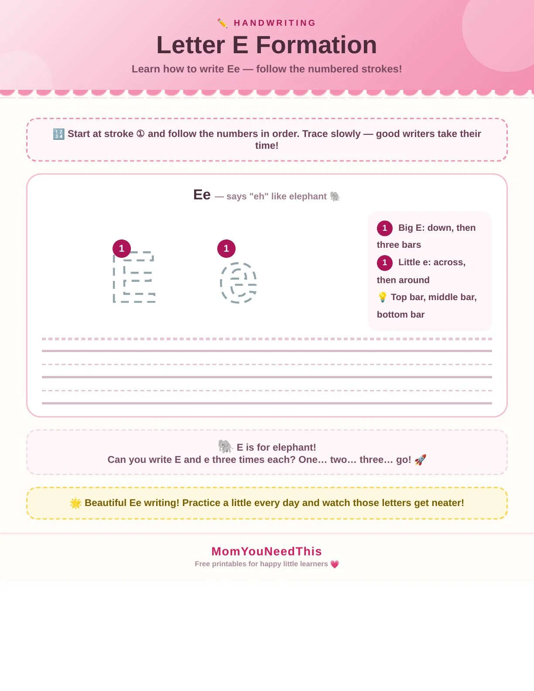

Letter E Formation Practice Trace And Write The Uppercase Letter E
Help your little learner practise forming the uppercase letter E with this fun, no-prep tracing printable. Big, clear letter guides make it easy for little hands.
🐘 Elephant
🥚 Egg
👁️ Eye
Quick Answer
All straight lines: this free printable teaches preschoolers to form the uppercase letter E — a downstroke and three bars — with guided tracing rows that show the order and the spacing. Children trace, then try on their own, building handwriting muscle memory plus the short /e/ sound connection with words like elephant, egg and elbow. Print at home with no signup needed.

✏️ Trace, Then Try On Your Own
Start with a finger: trace the big letter E in the air or on the table while you say how it goes. Then move to the worksheet — trace each E slowly, saying the letter name and its sound: “E says /e/, like elephant.” Finish with the try-it-yourself row.
⬇️ Download Free Printable 🖨️ Print🎁 Free printable for toddlers & preschoolers
👆 Say It While You Trace
Say the letter name and its sound each time your child traces. Words like elephant, egg and elbow all begin with the E sound — naming them as the pencil moves ties the shape to the sound.
🎯 Keep It Short And Sweet
Four straight strokes make E look easy, but keeping three bars level is real work for small hands. A few minutes is plenty — stop while it is still fun, and finish by praising the E with the straightest back and the shortest middle bar.
🎨 Keep Exploring Free Letter Activities
More alphabet learning activities are added regularly for toddlers and preschoolers.
🎁 View All Free Resources✏️ How To Form The Letter E
Letter E is formed like this. Capital E is built from straight lines: pull down from top to bottom, then add three bars — top, middle and bottom — with the middle bar a little shorter than the other two. Small e is a different animal entirely: start with the short middle line, then loop up and around and finish with a little tail — the only letter that begins with a sideways stroke.
Sound and shape travel together on this page: every bar your child adds is a chance to say the short “eh” — e-e-elephant. Letters learned as a movement plus a sound are remembered far better than letters learned as pictures to copy.
The mistake to watch for on this page is bars that lean or a middle bar as long as the others, which blurs E toward F. Counting “three bars” out loud while tracing keeps the shape honest.
🖨️ How to Use This Printable
Get started in minutes — everything here is free and made for busy parents.
- Download the printable. Tap the download button to save the free Free Letter E Formation Practice file to your device.
- Print it out. Use any home printer and regular paper — cardstock works great for pages little hands will use again and again. The print button opens the full-size page in a new tab if you prefer to print from there.
- Learn together. Sit with your child and say the strokes out loud as they trace the letter E — talking through the moves is what turns copying into memory. Short sessions work best.
- Explore more. Check the free printables linked below for your next activity.
❓ Free Letter E Formation Practice FAQs
Is this Free Letter E Formation Practice printable free?
Yes — every printable on MomYouNeedThis is 100% free to download and print. No signup, no payment, just tap the download button and print the E formation page as often as your child wants more practice.
How do I use this letter e printable?
Print the page and trace together, bar by bar: down first, then top, middle and bottom bars. Count them out loud as you go. Short, playful sessions work better than long lessons for little learners.
What literacy skills does this practice?
Formation, pencil control, and letter-sound knowledge. E's page also teaches an early counting habit — three bars, middle one shorter — and its lowercase partner looks completely different, so the pair is learned as two shapes with one name. Paired with its short /e/ sound in words like elephant, egg and elbow, it covers the core pre-writing skills.
🔗 More Free Printables You’ll Love
Pair this printable with more free learning activities from the MomYouNeedThis library.
- ✏️ Free Letter F Formation PracticeFree printable letter f formation practice for little learners.
- 🎨 Free Letter E Coloring PageFree printable letter e coloring page for little learners.
- ✏️ Free Uppercase Letter E TracingFree printable uppercase letter e tracing for little learners.
- ✏️ Free Lowercase Letter E TracingFree printable lowercase letter e tracing for little learners.